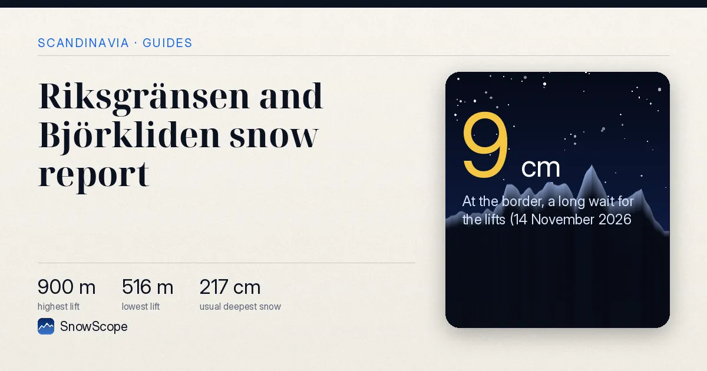
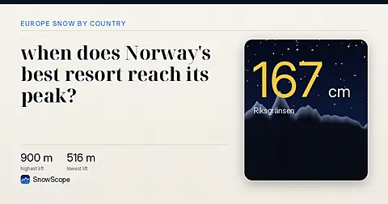

Riksgränsen and Björkliden snow report: 9 cm at the border, a long wait for the lifts (14 November 2026)
Winter's first snow has reached the far north, but the two ski areas straddling the Swedish-Norwegian border remain closed. The weather station at Katterjåkk, near Riksgränsen, measured 9 cm on 13 November, while Abisko near Björkliden held only 2 cm. Both resorts open in February when daylight returns, not because snow arrives.
See the live snow forecast for Riksgränsen in the SnowScope appSnow depth, powder alerts and the 3D map, free.

What stations measured this week
A single storm between 10 and 13 November brought the first real accumulation. Katterjåkk jumped from bare ground to 10 cm on 10 November, then settled slightly to 9 cm by the 13th. The manual station nearby recorded 14 cm on 12 November, suggesting some variation across short distances. Abisko, sitting in the rain shadow 30 km to the east, never climbed above 2 cm.
This gap reflects geography. Riksgränsen straddles the main watershed where Atlantic moisture hits the high ground first. By the time air reaches Björkliden and the Abisko valley further east, most moisture has already fallen as snow on the Swedish side.

November is usually deeper
Riksgränsen's 46-year record shows a typical depth of 46 cm at base and 65 cm at the summit by mid-November. By mid-December those figures rise to 81 cm and 99 cm. Right now, at 9 cm and an estimated 12 cm higher up, the resort sits well below the seasonal average.
Björkliden is drier even in a normal year: typically 28 cm at base and 56 cm at the top by now. Its 2 cm reading fits that pattern of lighter snow cover on the eastern slopes.
What comes next: snow and cold
Over the next seven days, SnowScope shows about 11 cm arriving at Riksgränsen's base and 9 cm at the summit; Björkliden will receive roughly 7 cm at base and 8 cm at the top. Other forecasts vary between 6 and 19 cm, so uncertainty remains. The good news: temperatures stay well below freezing all the way down to the valleys, so rain is not a threat.
Winter stability over decades
Neither resort has seen a decline in peak snow depth across the 46-year record. Riksgränsen's median peak at the summit was 221 cm in the first 15 winters of the dataset and 224 cm in the most recent 15 winters—stable. Björkliden shows similar consistency: 168 cm and 165 cm respectively. Both peaks occur in April, months away.
Why lifts open in February, not November
Riksgränsen's season runs from 18 February to 23 May; Björkliden from 4 February to 2 May. The timing is not set by snow depth but by daylight. At 68° north, November and December bring continuous darkness or twilight only. Skiers cannot see the terrain or enjoy it. By late February the sun climbs above the horizon for increasing hours each day, making a ski day possible and worthwhile.
This is not unique to the high north. Many Arctic and sub-Arctic resorts close mid-winter not for lack of snow but for lack of light. When the sun returns, Riksgränsen will almost certainly have more than a metre at the top—enough to ski.
Tips for skiers
- Planning a winter walk or northern lights trip in the next month? Expect thin snow cover and very limited daylight. The snow itself is safe enough on marked trails, but the darkness is the real constraint.
- If you venture onto the open fell near Katterjåkk or Abisko, stay on marked routes. Even light snow can conceal avalanche terrain; check the official avalanche bulletin from Lavinprognoser (SE) / Varsom (NO) before heading off-piste.
- The E10 mountain road between Sweden and Norway closes in heavy snow or storms. Always check current road conditions and weather before crossing the border.
- The 46-year climate record confirms that by April both resorts typically carry well over 1.5 m at altitude. If you can wait for daylight, the snow will be there.
About these numbers
Resort snow depths are the deepest snow on the resort's upper slopes on the date shown; they are estimates for an area, not a measurement at one point. Forecasts can change. Always read the official avalanche bulletin before going off-piste.
Official avalanche bulletins: Lavinprognoser (SE) / Varsom (NO)
Cite this report
For research, teaching or the press: the numbers and charts are free to reuse under CC BY 4.0 with this citation.
SnowScope (2026), Riksgränsen and Björkliden snow report: 9 cm at the border, a long wait for the lifts (14 November 2026), https://snowscope.app/blog/en/2026/11/riksgransen-bjorkliden-snow-report-14-november-2026.html, accessed 2026-11-14
SnowScope (Atlas Labs). (2026, November 14). Riksgränsen and Björkliden snow report: 9 cm at the border, a long wait for the lifts (14 November 2026). SnowScope snow reports. https://snowscope.app/blog/en/2026/11/riksgransen-bjorkliden-snow-report-14-november-2026.html
BibTeX
@misc{snowscope2026riksgransenbjorklidensno,
author = {{SnowScope (Atlas Labs)}},
title = {Riksgränsen and Björkliden snow report: 9 cm at the border, a long wait for the lifts (14 November 2026)},
year = {2026},
month = nov,
howpublished = {\url{https://snowscope.app/blog/en/2026/11/riksgransen-bjorkliden-snow-report-14-november-2026.html}},
note = {Published 2026-11-14 16:49 UTC; accessed 2026-11-14}
}· CC BY 4.0 · Methods, data and tools →
Riksgränsen: snow and temperature by height, this winter vs last (tools) →
Follow Riksgränsen
Free: a message when fresh snow is coming, and the forecast every morning.
More snow reports

Riksgränsen holds 167 cm today. SnowScope shows late March and mid-April are usually the snowiest weeks. Next seven days: up to 26 cm possible.

On 19 November, 142 Norwegian resorts have snow on upper slopes. Riksgränsen leads with 167 cm; 89% of high ground is white.

Riksgränsen holds 54 cm on 22 November, tracking closely with the 63 cm typical for this date. Snow covers 94% of Norway's mountains.